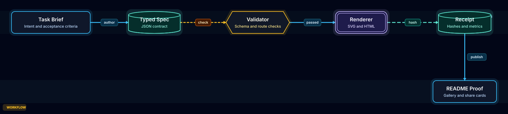
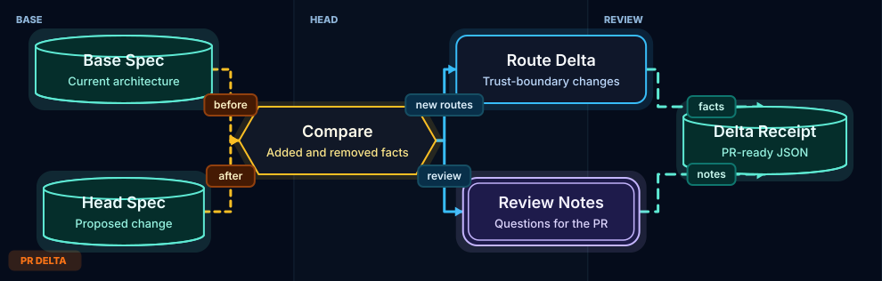
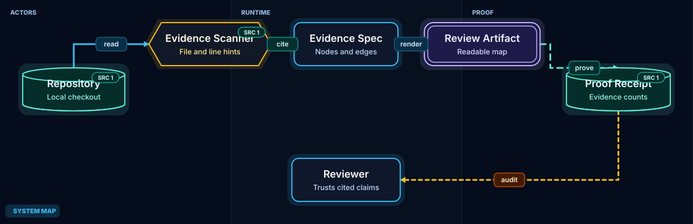

Architecture Artifact Engine
A compact agent workflow: typed spec, validation, deterministic rendering, receipt, and public proof surface.
Generated architecture artifacts with specs, receipts, source evidence, and PR delta surfaces. This gallery is built from the same checked JSON examples that CI validates.

A compact agent workflow: typed spec, validation, deterministic rendering, receipt, and public proof surface.

Base and head architecture specs produce a compact review artifact for changed components, routes, and proof receipts.

Architecture nodes and routes carry explicit source evidence so the diagram can defend its claims.
| Artifact | Mode | Theme | HTML | SVG | Spec | Receipt |
|---|---|---|---|---|---|---|
| Agent Runtime Proof LoopA local agent turns a task brief into a checked artifact with verifier feedback and durable lessons. | workflow | classic | HTML | SVG | JSON | Receipt |
| Product Analytics Data FlowEvents move from application capture through queue, warehouse, and downstream reporting. | dataflow | classic | HTML | SVG | JSON | Receipt |
| Agent Task LifecycleA task moves through planning, execution, verification, repair, and terminal receipt states. | lifecycle | classic | HTML | SVG | JSON | Receipt |
| PR Delta Architecture Review1 nodes added, 0 removed, 2 edges added, 1 removed. | pr-delta | classic | HTML | SVG | JSON | Receipt |
| PR Delta Review MapA review artifact shows the base path, proposed change, and proof gate before merge. | pr-delta | classic | HTML | SVG | JSON | Receipt |
| Repo Evidence Architecture MapA reviewable map separates authored topology from source-pinned evidence and confidence. | architecture | classic | HTML | SVG | JSON | Receipt |
| Cache Miss Request SequenceA single request path shows cache lookup, database fallback, and response return. | sequence | classic | HTML | SVG | JSON | Receipt |
| Service MapOne local request path with async work and model access. | architecture | classic | HTML | SVG | JSON | Receipt |
| Architecture Artifact EngineA compact agent workflow: typed spec, validation, deterministic rendering, receipt, and public proof surface. | workflow | showcase | HTML | SVG | JSON | Receipt |
| PR Delta Review SurfaceBase and head architecture specs produce a compact review artifact for changed components, routes, and proof receipts. | pr-delta | showcase | HTML | SVG | JSON | Receipt |
| Source-Evidence Architecture MapArchitecture nodes and routes carry explicit source evidence so the diagram can defend its claims. | architecture | showcase | HTML | SVG | JSON | Receipt |
{kind=link}
{kind=link}
{kind=link}
{kind=link}
{kind=link}
{kind=link}
{kind=link}
{kind=link}
{kind=link}
{kind=link}
{kind=link}